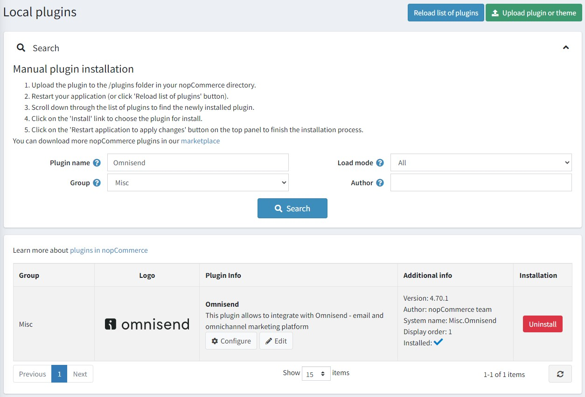
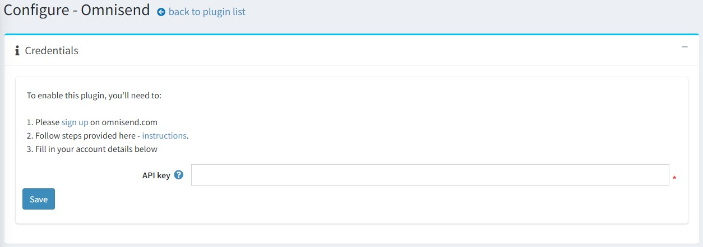

Omnisend 整合
本章節說明如何將 Omnisend 外掛整合至您的商店中。該外掛支援所有 nopCommerce 版本，包含從 4.30 到 4.70 的次要版本。
什麼是 Omnisend
Omnisend 是一個電子郵件與簡訊行銷自動化平台，旨在協助電子商務商店與其顧客建立連結並進行互動。您可以建立彈出式視窗與註冊表單來收集新的訂閱者。透過電子郵件與簡訊等管道與他們互動。利用您的商店資料來劃分顧客群組，並透過個人化的自動化功能來提升銷售。
Omnisend 外掛的功能
適用於 nopCommerce 的 Omnisend 外掛允許商店擁有者執行以下操作：
- 同步聯絡人 - 執行訂閱電子報之顧客的同步作業。
- 同步商品 - 同步商品類別與商品資訊。
安裝並啟用外掛
Omnisend 外掛是 nopCommerce 內建的外掛。您可以在這裡找到它：設定 → 本地外掛。若要更快速地找到此外掛，請使用搜尋面板中的 群組 欄位，將外掛篩選為 Misc 類型：

如果外掛尚未安裝，請點擊 安裝 按鈕進行安裝。接著，點擊 編輯 按鈕來啟用它。此時您會看到 編輯外掛詳細資訊 視窗。透過 已啟用 核取方塊將外掛標記為啟用，然後點擊 儲存 按鈕。
如何設定此外掛
點擊 Configure 按鈕。您將會看到 Configure - Omnisend 視窗：

若要在 nopCommerce 中使用 Omnisend，您需要 建立一個帳號。您可以從免費方案開始探索平台功能，無需信用卡。
Note
如果您已經在使用 Omnisend，且該帳號已連結到其他商店，請務必先 建立一個新的空白商店。
若要將 Omnisend 連接到您的商店：請 登入 您的 Omnisend 帳號。
點擊儀表板或帳號導覽選單中的 Connect store。

產生一組 API key 並將其貼到外掛設定頁面中的對應欄位。

點擊 Save 按鈕。
前往 Synchronization 面板，將您的 nopCommerce 顧客與商品同步到您的 Omnisend 帳號。

支援哪些功能？
- 電子郵件 與 簡訊行銷活動。
- Omnisend 註冊表單。
- 其他第三方整合。
- 這些自動化工作流程：
- 區隔分析。區隔分析中的大多數篩選器皆可使用，除了以下訂單狀態事件：訂單已付款、訂單已取消、訂單已出貨、訂單已部分出貨、訂單已退款、訂單已部分退款。不過，您仍然可以使用「訂單已建立」篩選器。
- 即時活動。
- 新增您的 品牌資產。
同步哪些資料？
下列商店資料現在將會同步至 Omnisend：
- 顧客詳細資料
- 商品與已瀏覽的分類
- 訂單相關事件
- 購物車放棄相關事件
Note
手動同步應僅執行一次，若進行多次同步，批次寫入（batch insert）將會回報資料寫入錯誤。後續的同步會自動執行，無需管理員參與。
聯絡人同步
此外掛實作了兩種型態的聯絡人同步：
初始匯入所有現有聯絡人。此動作在使用者剛安裝外掛，並希望將所有現有的商店聯絡人匯入至 Omnisend 帳號時執行。
訂閱或取消訂閱時的聯絡人同步。
顧客追蹤事件 (JS snippet)
為了追蹤商店中的使用者動作，會在網站的所有頁面上安裝一段 JS 腳本。預設情況下，該腳本會追蹤所有頁面的造訪紀錄，包含對商品頁面的造訪。此外，還會使用額外的腳本來通知使用者識別資訊。
購物車事件、訂單事件
在外掛中，需追蹤多項事件以通知 Omnisend 服務：
- 將商品加入購物車。
- 下訂單。
- 訂單付款。
- 訂單退款。
- 取消訂單。
- 完成訂單處理。
- 開始結帳流程。
- 變更購物車中的商品（增加數量、折扣等）。
- 從購物車中刪除最後一個商品。
- 變更訂單狀態。
- 還原購物車。顧客可以選擇從 Omnisend 的電子郵件（廢棄購物車提醒）中的連結回到商店。
商品同步
此外掛實作了類別與商品的匯入功能。 當您點擊 Sync products 按鈕時，同步處理程序就會執行。
Note
如果類別數量較多（>300 個），系統會向使用者顯示警告，說明匯入可能需要較長時間。
除了初始匯入外，此外掛亦實作了商品的即時同步，但僅追蹤 StockQuantity 參數的變更，以確保商品狀態（inStock、outOfStock、notAvailable）維持在最新狀態。